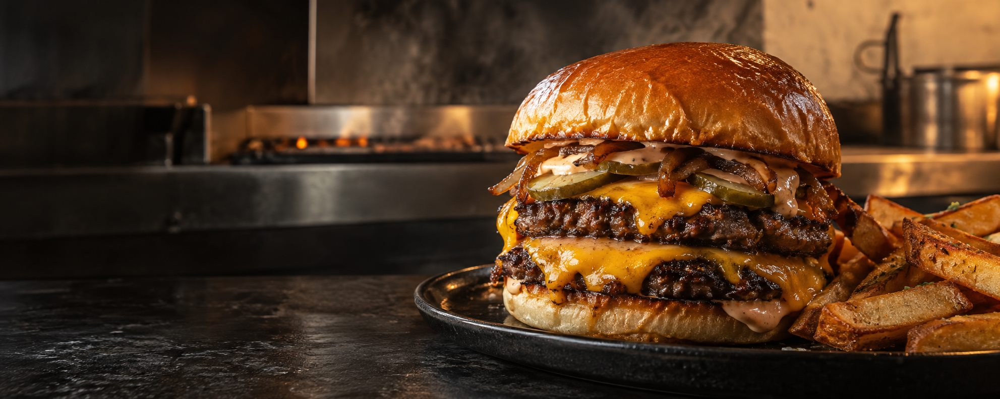

Carne na chapa
Prensada na hora para criar a crosta que faz toda a diferença.

Chapa quente • sabor sem atalho
Smash burgers com borda crocante, ingredientes honestos e combinações feitas para sujar as mãos.
Prensada na hora para criar a crosta que faz toda a diferença.
Brioche macio por dentro, dourado na manteiga por fora.
Receita cremosa, ácida e defumada na medida.
Nossa brasa
A Brasa Alta nasceu da vontade de fazer o básico muito bem feito — e depois colocar personalidade em cada camada.
Carne fresca, fornecedores próximos e uma chapa que não descansa. Aqui, cada burger é montado só depois do pedido. Sem atalhos e sem pose.
Conheça a casaDa chapa para a mesa
Detalhes reais, textura de verdade e aquele minuto de silêncio depois da primeira mordida.
“É o tipo de burger que pede guardanapo extra — e vale cada mordida.”
Chega mais
Salão, retirada ou entrega. Escolha seu jeito e deixe o resto com a gente.
Bateu a fome?
Atendimento durante o horário de funcionamento.